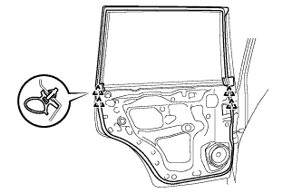
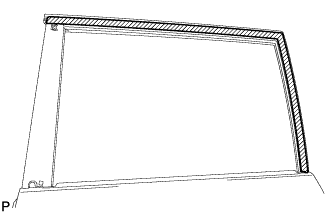
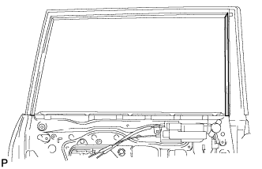
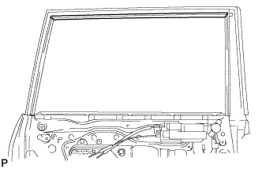
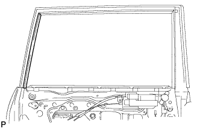

BLACK OUT TAPE (for Rear Door) > REMOVAL |
| Item | Temperature |
| Vehicle Body | 40 to 60°C (104 to 140°F) |
| Black Out Tape | 20 to 30°C (68 to 86°F) |
| Window Frame Moulding | 20 to 30°C (68 to 86°F) |
| 1. DISCONNECT CABLE FROM NEGATIVE BATTERY TERMINAL |
| 2. REMOVE REAR DOOR INSIDE HANDLE BEZEL LH |
 |
Using a screwdriver, detach the 4 claws and remove the bezel.
| 3. REMOVE REAR DOOR ARMREST BASE PANEL ASSEMBLY LH |
 |
Using a moulding remover, detach the 7 claws.
Disconnect the connector and remove the rear door armrest base panel and rear power window regulator switch assembly.
| 4. REMOVE ASSIST GRIP COVER LH |
 |
Using a moulding remover, detach the 9 claws and remove the door assist grip cover.
| 5. REMOVE REAR DOOR TRIM BOARD SUB-ASSEMBLY LH |
 |
Remove the 3 screws.
Remove the 9 clips, 4 claws and trim board.
Disconnect the connector and remove the trim board.
 |
Disconnect the 2 cables from the inside handle.
| 6. REMOVE REAR INNER DOOR GLASS WEATHERSTRIP LH |
 |
Remove the weatherstrip by pulling it upward in the direction indicated by the arrow.
| 7. REMOVE REAR DOOR SERVICE HOLE COVER LH |
 |
Using a clip remover, detach the 6 clamps.
Remove the bolt and disconnect the 2 connectors.
Remove the service hole cover.
| 8. REMOVE REAR DOOR GLASS RUN LH |
 |
Remove the rear door glass run from the window frame.
| 9. REMOVE REAR DOOR REAR LOWER WINDOW FRAME SUB-ASSEMBLY LH |
 |
Remove the 2 bolts.
Remove the screw and window frame.
| 10. REMOVE REAR DOOR QUARTER WINDOW GLASS LH |
 |
Remove the rear door quarter window glass and rear door quarter window weatherstrip as a unit as shown in the illustration.
| 11. REMOVE REAR DOOR GLASS SUB-ASSEMBLY LH |
 |
Remove the rear door glass sub-assembly from the rear door window regulator sub-assembly as shown in the illustration.
| 12. REMOVE REAR DOOR BELT MOULDING ASSEMBLY LH |
 |
Put protective tape around the belt moulding.
 |
Detach the claw and remove the belt moulding.
| 13. REMOVE REAR DOOR FRONT WINDOW FRAME MOULDING LH |
 |
Put protective tape around the window frame moulding.
Detach the clip and remove the double-sided tape to remove the window frame moulding.
| 14. REMOVE REAR DOOR FRAME GARNISH LH |
 |
Detach the clip and remove the rear door frame garnish.
| 15. REMOVE REAR NO. 2 DOOR FRAME GARNISH LH |
 |
Detach the clip and remove the rear door frame garnish.
| 16. REMOVE REAR DOOR WEATHERSTRIP LH |
 |
Detach the 4 clips, and remove the upper part of the rear door weatherstrip so that the black out tape can be removed.
| 17. REMOVE NO. 2 BLACK OUT TAPE LH |
 |
Pull back an edge of the black out tape and pull it parallel to the vehicle body to remove it.
| 18. REMOVE NO. 6 BLACK OUT TAPE LH |
 |
Pull back an edge of the black out tape and pull it parallel to the vehicle body to remove it.
| 19. REMOVE UPPER INNER BLACK OUT TAPE LH |
 |
Pull back an edge of the black out tape and pull it parallel to the vehicle body to remove it.
| 20. REMOVE REAR INNER BLACK OUT TAPE LH |
 |
Pull back an edge of the black out tape and pull it parallel to the vehicle body to remove it.